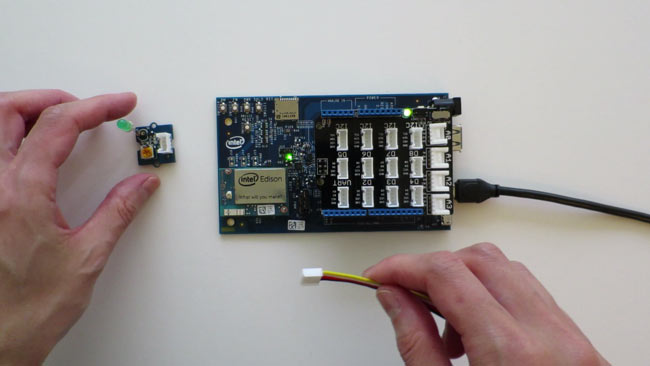
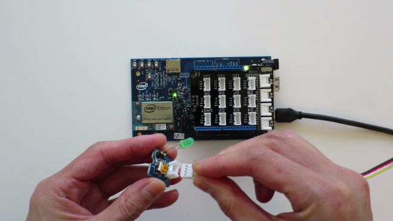
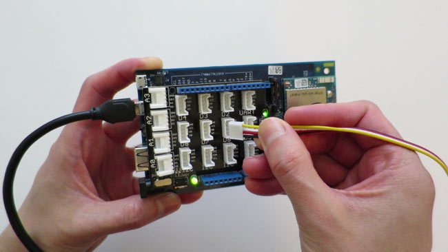
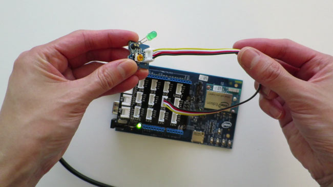

-
Choose a component from the Grove System.

In this example, the Grove LED Socket is being used.
-
Use a 4-pin Grove Cable and connect one end of the cable to the component.
The cable connectors only fit in one direction so you can be confident that the wiring is correct.

-
For the other end of the cable, refer to the the Grove Base Shield labels for the correct pin to connect to based on the component chosen.
- Digital pins (D2-D8)
- Analog pins (A0-A3)
- I2C (bottom row)
- UART (top right)

In this example, the Grove LED Socket is a digital component and is being connected to pin D6.
When done, both ends of the Grove 4-pin cable should be connected.
